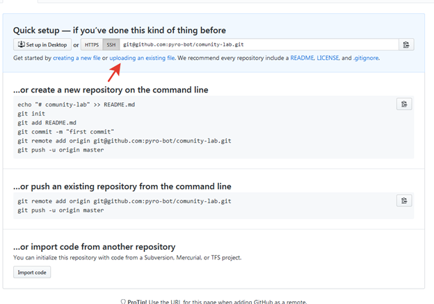
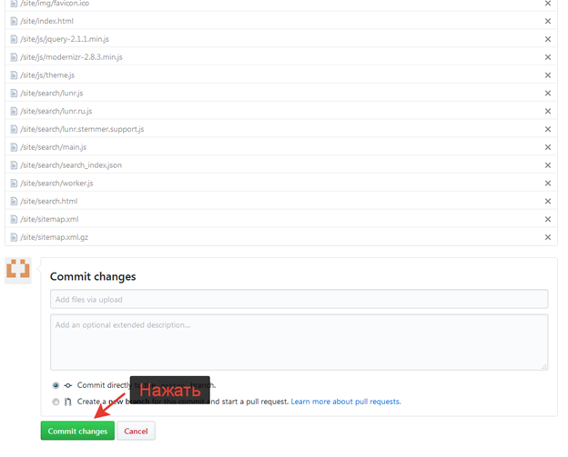
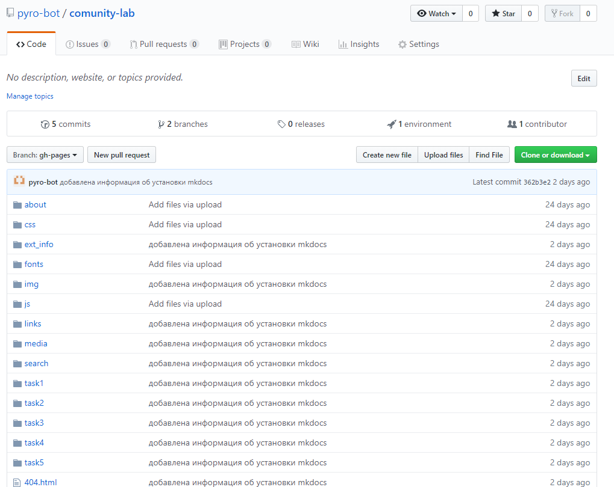

Публикация сайта
В данном задании мы научимся публиковать наш сайт в интернете.
Github Pages
Github Pages - это сервис позволяющий публиковать свои статические сайты в интернете на базе Github
Процесс публикации
- Сгенерировать сайт для публикации
- Создать репозиторий
- Загрузить файлы сайта
- Настроить Github Pages
1. Генерация сайта для публикации
- Найдите и запустите файл
build.batилиvdocs-build.bat - В результате работы файла у вас появится папка
site - Это и есть ваш сайт. Загружать нужно содержимое этой папки
2. Создание репозитория
- Первым делом надо зарегистрироваться на сайте github.com
- Создать репозиторий, нажав на кнопку
Newна главной странице github.com
- Настройте свой репозиторий:

- поле
Repository Name- имя вашего репозитория. Только на английском и без пробелов Другие параметры трогать не надо.
В конце нажмите на кнопкуCreate repository
После создания репозитория вы увидите стартовую страницу вашего нового репозитория
Стоит отметить, что как только вы загрузите файлы данная страница пропадет, но это не страшно, так как в новом интерфейсе ее функции дублируются
- поле
3. Загрузка файлов
Существует 2 сценария загрузки файлов:
- Для первой загрузки файлов
- Для всех последующих
Мы разберем оба
Загрузка файлов в первый раз
- Как только вы создадите репозиторий вы увидете стартовую страницу 
- Нажмите на ней ссылку
uploading an existing fileВыделено красной стрелкой - После этого вы увидите страницу для загрузки файлов

- Откройте папку с файлами сайта и просто перетащите их в поле для загрузки на сайте
- После того как все файлы будут загружены нажмите на кнопку
Commit changesЗагрузка файлов после перетаскивания начнется автоматически  - После фиксации изменений
Commit changesвы увидете страницу вашего репозитория с вашими файлами 
Загрузка файлов в репозиторий с уже существующими файлами
- Для загрузки файлов поспользуйтесь кнопкой
Upload filesна главной странице вашего репозитория - Далее все как в Загрузка файлов в первый раз, начиная с шага 3
4. Настроить Github Pages
- На влавной странице вашего репозитория нажмите кнопку
Settings - Промотайте страницу настроек до надписи
GitHub Pages
- Настройте блок согласно рисунку выше
- После настройки вы увидите надпись вверху блока
GitHub Pages-Your site is ready to be published at <адрес сайта>
Если эта надпись появилась, то это значит, что ваш сайт готовится к публикации
Когда публикация будет завершена вы увидите следующую надписьYour site is published at <адрес сайта>Зеленого цвета
Описание задания
Опубликовать ваш сайт на Github Pages